Introduction
There are two assumptions of t-tests we now know we are supposed to check before we run a t-test, normality and homogeneity of variance, so that the p-values will be accurate when we conduct our t-tests. We also know about the central limit theorem, which reassures us that a big sample size will save us from non-normality problems. However, we we may not always have the sample size needed for the central limit theorem to cover us.
As we have discussed before, in biological data skewed distributions are usually right skewed, due to the "basement effect". Basement effect means that there is a lower limit to our data values, and that observations tend to pile up near that lower limit, but are free to extend as far in the positive direction without limit. The reason that basements are more common than ceilings (which are maximum limits, which tend to produce left-skewed data) is that data such as counts of objects, weights, lengths, and other physical dimensions can't go below zero, but have no upper limit.
Another common data type we use that are often skewed are ratios, such as sex ratios. Ratios of two positive numbers also can't go below zero but can be infinitely large, so they too show a basement effect. A sex ratio is the ratio of number of males to number of females (or, equivalently, proportion of males to proportion of females), and when males and females are equally common, such that the population has a 1:1 sex ratio, the number of males divided by the number of females will equal 1. If we had data on the proportion of females and the proportion of makes in 1000 populations, we might get something like this:
| 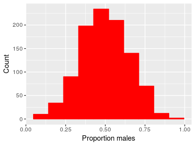 |
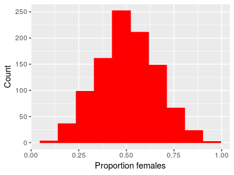 |
We can look at the proportion of males in each population or the proportion of females and we see the same thing - the distribution looks bell-shaped, and they are centered on 0.5. If the proportion of males on average is 0.5, the proportion of females on average also has to be 0.5 (since proportion females is 1-proportion males). We can test whether the mean proportion of males is different from 0.5 with a one-sample t-test, and we would find:
x̄ = 0.495
tobs = -0.9685, df = 999, p = 0.333
The 95% confidence interval for the mean is 0.486 to 0.504, so there's little doubt that the population has close to 50% males.
Given this, if we calculated a sex ratio by dividing the proportion of males by the proportion of females we should see a majority of populations close to an even sex ratio of 1.
| 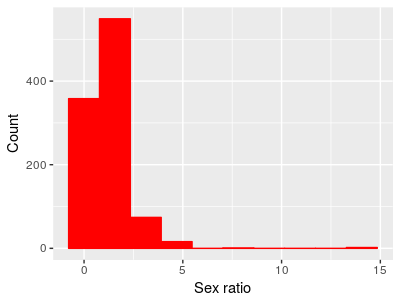 |
And in fact that's exactly what we see - a peak at 1 where the proportion males and proportion females is equal. But also notice that the distribution is no longer bell-shaped. Because means are affected by skew in data, the mean sex ratio is 1.23, which is a male-biased number. If we did a one-sample t-test of this mean against a hypothetical sex ratio of 1 we would see: t = 7.0919, df = 999, p-value = 2.5e-12 The 95% confidence interval for the mean is 1.16 to 1.29. So, if we analyze the data as proportion of one sex or the other we get an equal number on average, but if we analyze the same data as sex ratios we get strong evidence of a male-biased ratio. |
Having the results depend on an arbitrary choice is a Bad Thing. Bear in mind that the problem isn't that we're violating the assumptions of a t-test per se - it's true that normality is an assumption of t-tests, but we often worry about violating assumptions because the p-values we obtain become unreliable. That's not the problem here - the p-value is probably a very good indication of the probability of obtaining a mean of 1.23 from a population with a mean of 1.
The problem is that the mean is a terrible indicator of where the majority of the data are for this distribution.
If we want to test whether the sex ratios are biased towards males or females, how would we proceed? There are several approaches, but the one we will learn today is to use a transformation.
Transformations
Transformations are mathematical functions that are applied to our data set to change its distribution. If we can find a transformation that makes our data approximately normal with equal variances between groups, we can go ahead and use the t-tests on the data. To change the shape of a distribution, a transformation has to change more than the location of the mean or the size of the variance, it has to change the relative spacing among observations.
One commonly used transformation to treat right-skew in a data set is the log transformation. Log transforming a variable just means to take the log of each data value. After transforming the data, they are on a log scale.
Recall from your high school math classes that the log of a number is the exponent a base needs to be raised to get your number. For example, if we used base 10 logarithms (to make the numbers easy to work in our heads), then the log of the number 100 is 2, because we need to raise the base of 10 to the power of 2 to get 100 (102 = 100).
Remember also that you can use different bases to calculate logarithms - to make the math easier to follow we used base 10 logs above, but a more common choice is to use natural logs, which are often symbolized as loge, or ln. Natural logs use the base e, which is approximately equal to 2.718 - this is an irrational constant, like π. Natural logs are related to continuous growth rates, and they have some nice theoretical properties that base 10 logs don't share. Don't worry too much about why, but bear in mind that unless specifically told otherwise, a log transformation is probably done with natural logs (in some statistical packages the "log" function gives natural logs, and the "log10" function gives logs of the base 10).
So, if we take the natural logs of all the sex ratios in the data set, we would see this (run the animation to see the x-axis change from a linear scale to a log scale):
|
The top x-axis has the sex ratios shown in the un-transformed
units so that you can see how the transformation stretches the
left side and compresses the right side of the scale. The bottom
x-axis transitions from using the un-transformed data scale to
displaying the natural logs of the data. As the animation runs, the upper and lower ends of each bin on the histogram are kept the same so that you can see how re-scaling the numbers affects the distribution. Also watch the location of the blue vertical line - it is positioned at a value of 1, which is an equal sex ratio, and during the transition to log scale it moves to a position of 0 on the bottom x-axis, because the natural log of 1 is 0. |
A histogram with different-sized bins may look a little odd, so the histogram below gives the log-transformed data with equally spaced bins. You'll see the right skew in the data is gone.
|
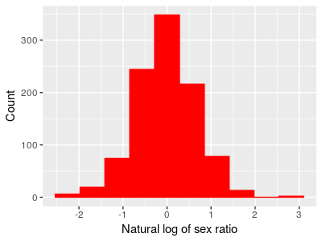Notice a couple of things about the log-scale data:
|
If we take the average of these log-transformed sex ratios it's -0.02, which is very close to 0 - the average of the data is now a good representative for the typical value. If we did a one-sample t-test of the mean against 0 we would get:
t = -1.047, df = 999, p = 0.2953
which indicates that the mean is not significantly different from 0.
Testing on a log scale allowed us to ask the right question about our data, but it has one down side - the results results are in log units, which are hard to interpret. To interpret what the analysis is telling us about the data we must convert the results back into the original data scale. For that we need a back-transformation.
Back-transformation
Back-transformation means to take our results from our analysis on a log scale and re-scale it back to the original data units so we can interpret the results. We have to do this because our understanding of our data expressed on a log scale isn't nearly as good as our understanding on the original data units, and we want to make sure we understand the results properly. The back-transformation for a log transformation is the "exp" function, which means to take our log-scale value and use it as the exponent in ex. The function that takes the base e and raises it to the number you supply is called exp() in both Excel and MINITAB (on your calculator, you may have a button with ex which is the same thing).
The mean on a log scale for our sex ratios of -0.02 is equal to a sex ratio of exp(-0.02) = 0.98.
Now we have a puzzle to solve: the average we tested in our one-sample t-test of -0.02 on a log scale is equivalent to a sex ratio of 0.98, but notice that this is not equal to the mean of the sex ratio data - remember, the mean of the sex ratios is 1.23. So what, exactly, does this value of 0.98 represent?
What are you calculating when you calculate a mean of log-transformed data?
When we calculate a mean of log-transformed data, we sum the logs of data values, and divide by the number of data values.
Remember again your high school math class that taking the log of a product is equal to the sum of the logs:
Remember too that another way of writing the square root of x is to write x1/2. Finally, recall that taking the log of a number raised to an exponent is equal to multiplying the log of the number by the exponent:
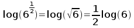
Putting these two rules together, we can see that:
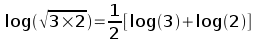
The right side of this formula is just the arithmetic mean of the two numbers on a log scale, log(3) and log(2). So, if we reverse this series of steps by back-transforming the mean of our log-transformed data, we would get:
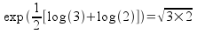
This simple example is for just two numbers, but if we have n numbers the calculation is:
The left side of the equation is just e raised to the mean of the log-transformed data. The right side is the nth root of the product of all the raw data values (the xi's), which is the definition of a quantity called the geometric mean. If we used the formula directly to calculate the geometric mean of our data we would multiply all 100 sex ratios together, then 1000'th root, and we would get a geometric mean of 0.98, the same number we got by back-transforming the mean of log-transformed sex ratios.
What is the geometric mean? The geometric mean is another measure of central tendency for a data set, and it equals the arithmetic mean in a symmetrical distribution. However, the geometric mean of a skewed distribution will be closer to the mode than either the mean or median will be. This is a good thing for our example, because the geometric mean of 0.98 is where the peak in the histogram falls, and thus is where most of the sex ratios are.
Back-transforming a confidence interval
The mean of the log transformed data is -0.02. We can calculate a confidence interval for this mean like so:
s = 0.673
sx̄ = 0.673/sqrt(1000) = 0.021
t(0.025, 999) = 1.96
Upper limit = -0.02 + 1.96 x 0.021 = 0.019
Lower limit = -0.02 - 1.96 x 0.021 = -0.064
Notice that when we calculate the confidence interval on a log scale, we use the usual confidence interval formula we've used before: mean ± uncertainty. Since we are adding and subtracting the same uncertainty value, the confidence interval is symmetrical around the mean on a log scale.
The confidence interval we just calculated is for the mean on a log scale, which we now know is the geometric mean on the original data scale. If we back-transform the upper and lower limit we get the confidence interval for the geometric mean on the original scale of the data, like so:
Upper limit on data scale = exp(0.019) = 1.019
Lower limit on data scale = exp(-0.064) = 0.938
This means that our estimate of the geometric mean sex ratio is 0.98, and we have 95% confidence it lies between 0.938 and 1.019. After back-transformation the interval is no longer symmetrical, however, since the upper limit is a little further away from the geometric mean than the lower limit is.
| 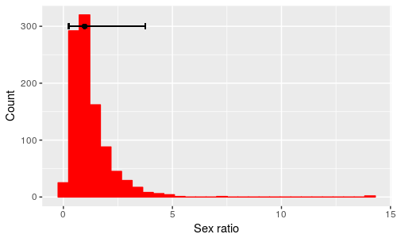 |
Again, this is different than we're used to, but it makes sense - since sex ratios can't go below 0 we can be very certain that the lower limit is between 0 and 0.98, but ratios can be infinitely large. It makes sense for the lower limit to be closer to the geometric mean than the upper limit is. The confidence intervals are pretty small, but you can see the point if we do the same type of calculation using ± 2 standard deviations around the mean on a log scale and then back-transform these limits, shown as the black bar above the histogram. Remember that this interval is expected to contain 95% of the data values, and according to the error bars half of that 95% falls between 0.25 and 0.98, while the other half falls between 0.98 and 3.76. |
What does a t-test on log-transformed data test?
One-sample designs
The one-sample example above compared the log-transformed mean sex ratios to a value of 0. Remember one last rule of logs, that:
log(a/b) = log(a) - log(b)
A one-sample t-test hypothesizes that the population mean, μ, equals a hypothetical value, such as an even sex ratio of 1. On a log scale, the hypothesis is that log(μ) - log(1) = 0. When we do the test, we use the mean of the log-transformed sex ratios as an estimate of μ. According to the rule of logarithmic division, what we are testing about sex ratios, then, is:
Ho: g/1 = 1
where g represents the geometric mean of the population.
Two-sample designs
What would change if we had two groups instead of one? Two sample designs compare two population means, so our null hypothesis would be that:
Ho: μ1 - μ2 = 0
If the μ's are on a log scale, then this is equivalent to testing testing the hypothesis:
Ho: g1/g2 = 1
where the g's are the population geometric means of the two groups. If you back-transform the difference between two means of log-transformed data, you will obtain the ratio of the geometric means on the original data scale.
As an example, we can split the data on sex ratios into two groups and compare them. After log-transforming, the summary statistics are:
| Group | Mean | s | n |
|---|---|---|---|
| Group 1 | 0.003 | 0.66 | 500 |
| Group 2 | -0.047 | 0.69 | 500 |
A two-sample t-test gives us:
t = 0.615, df = 998, p = 0.5386
The (non-significant) difference between means that was tested in this t-test is 0.05. Back-transformed, we get exp(0.05) = 1.05, which tells us that the geometric mean for Group 1 is 1.05 times as big as the geometric mean for Group 2. We can get the same result by calculating the geometric means for the groups and then dividing them, like so:
| Group | Geometric mean |
|---|---|
| Group 1 | exp(0.003) = 1.003 |
| Group 2 | exp(-0.047) = 0.952 |
The ratio of these geometric means is 1.003/0.952 = 1.05, the same as the back-transformed difference.
So, bear in mind: when you use a transformation on your data to improve normality and to meet the HOV assumption of a t-test, your test is no longer testing whether the difference in the arithmetic means of the raw data is equal to 0, but instead it is testing whether the ratio of the geometric means of the raw data is equal to 1. Using geometric means is a good thing for these skewed ratios, as they more accurately represents what's going on in the population, but be aware how this transformation changes things, and interpret your results accordingly.
Transformations for different degrees of skewness
The first example of a transformation was based on sex ratios because the cause of the skewness and its solution make some intuitive sense (hopefully!), but log-transformation is an effective treatment for heavily right-skewed distributions regardless of the cause of the skew. However, skewed variables are not all equally skewed, and log-transformation may not always be needed. For example:
| 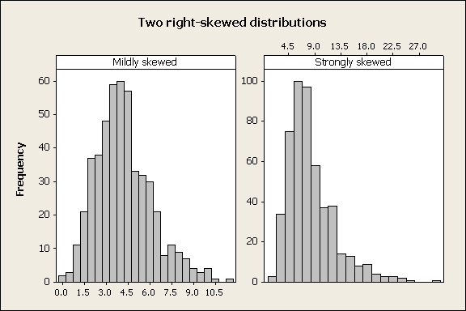
In the two distributions above the skew in the left panel is not as severe as the skew in the right panel. If we applied a log-transformation to the mildly skewed variable, we would over-correct and produce a left-skewed distribution instead of a normal one. |
| 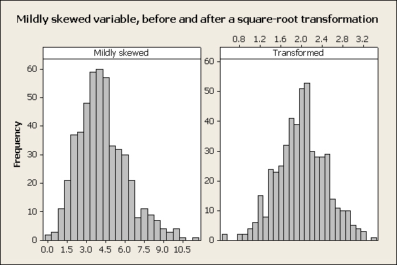
Taking the square root of each observation is often an effective treatment for mildly skewed variables: |
| 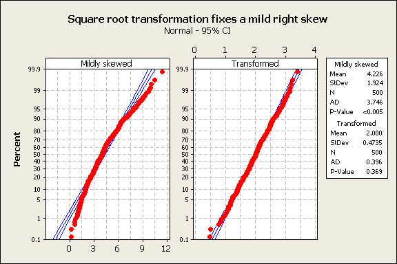
The normal probability plot confirms that this worked well: |
To sum up: in general, if you have a right-skewed variable, try a square-root transformation and a log-transformation, and see which one results in the best normal probability plot. What you should definitely not do is to transform your data both ways, do a t-test on each, and then choose the transformation that gives you the desired result in your t-test!
Next activity
We will use data on survival of lung cancer patients from a drug trial done by the Veterans Administration (VA). Survival data is another common biological variable that is usually skewed - most patients live for a short period of time, but a few live for substantially longer than average. We will see how different approaches to analyzing the effectiveness of a drug at extending survival time affects the results. Additionally, survival times for two different cancer types (small cell and large cell) will be compared.